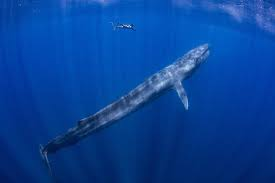

Blue whales, the largest animals to have ever existed on Earth, are awe-inspiring giants of the ocean. These magnificent marine mammals can reach lengths of up to 100 feet and weigh as much as 200 tons. Despite their immense size, blue whales primarily feed on tiny shrimp-like creatures called krill. During feeding season, a blue whale can consume up to 4 tons of krill each day. Their sheer size and their graceful movements through the water make them one of the most extraordinary sights in the natural world.
One of the most remarkable aspects of blue whales is their vocalizations. These whales are known to produce low-frequency sounds that can travel great distances underwater, making their calls one of the loudest and farthest-reaching sounds produced by any animal. These sounds play a crucial role in communication, navigation, and mating. Scientists believe that blue whales use these vocalizations to stay in touch with each other across hundreds of miles of ocean, demonstrating a complex and sophisticated form of communication.
Blue whales have a global distribution, found in all the world's oceans except the Arctic. They migrate between feeding grounds in polar regions and breeding grounds in more temperate or tropical waters. These migration patterns are driven by the availability of krill, with blue whales traveling thousands of miles each year to take advantage of seasonal blooms of their preferred food source. This migratory behavior is a testament to the adaptability and endurance of these incredible creatures.

Despite their colossal size, blue whales face numerous threats from human activities. In the past, commercial whaling decimated blue whale populations, bringing them to the brink of extinction. Today, while whaling is no longer a significant threat, blue whales still face dangers such as ship strikes, entanglement in fishing gear, and the impacts of climate change on their food supply. Conservation efforts are essential to protect these gentle giants and ensure their survival for future generations.
The blue whale's life cycle and behaviors continue to fascinate scientists and nature enthusiasts alike. Their long lifespans, which can exceed 80 years, provide opportunities for researchers to study their growth, reproduction, and social structures over extended periods. Understanding the biology and ecology of blue whales not only enriches our knowledge of marine life but also underscores the importance of protecting our oceans. These magnificent creatures remind us of the vastness and interconnectedness of life on Earth, inspiring awe and a sense of responsibility toward preserving our natural world.
In conclusion, blue whales are extraordinary creatures that captivate our imagination with their immense size, fascinating behaviors, and remarkable adaptations. As the largest animals on Earth, they play a vital role in marine ecosystems and demonstrate the incredible diversity of life in our oceans. Despite facing numerous threats from human activities, conservation efforts offer hope for their future survival. By protecting blue whales and their habitats, we contribute to preserving the natural wonders of our planet for generations to come.